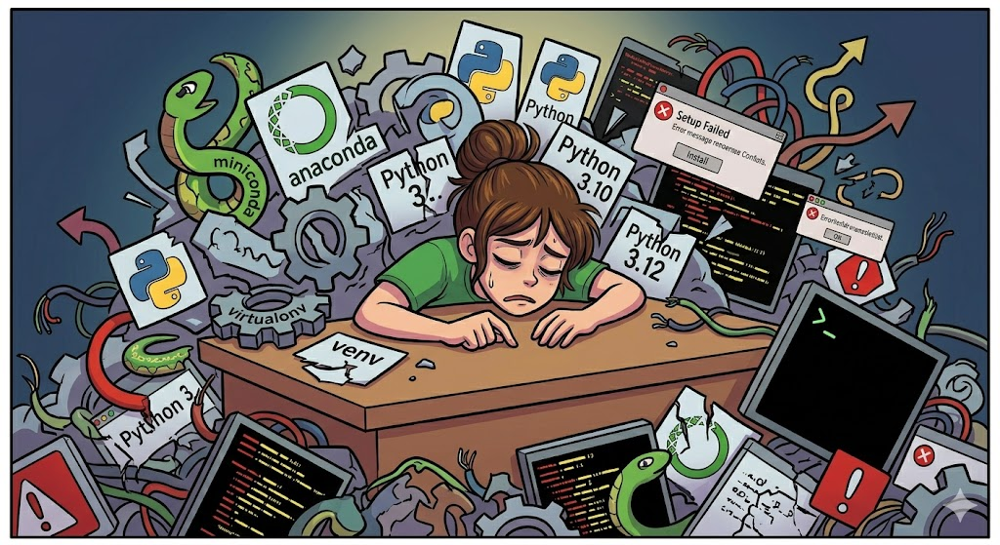
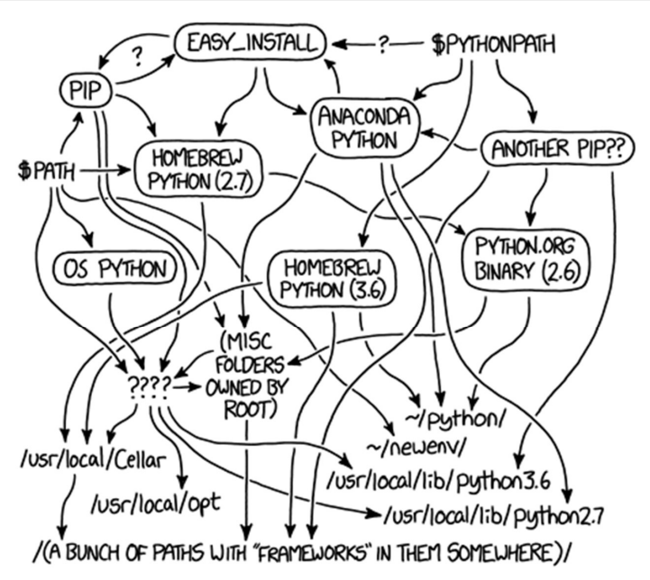
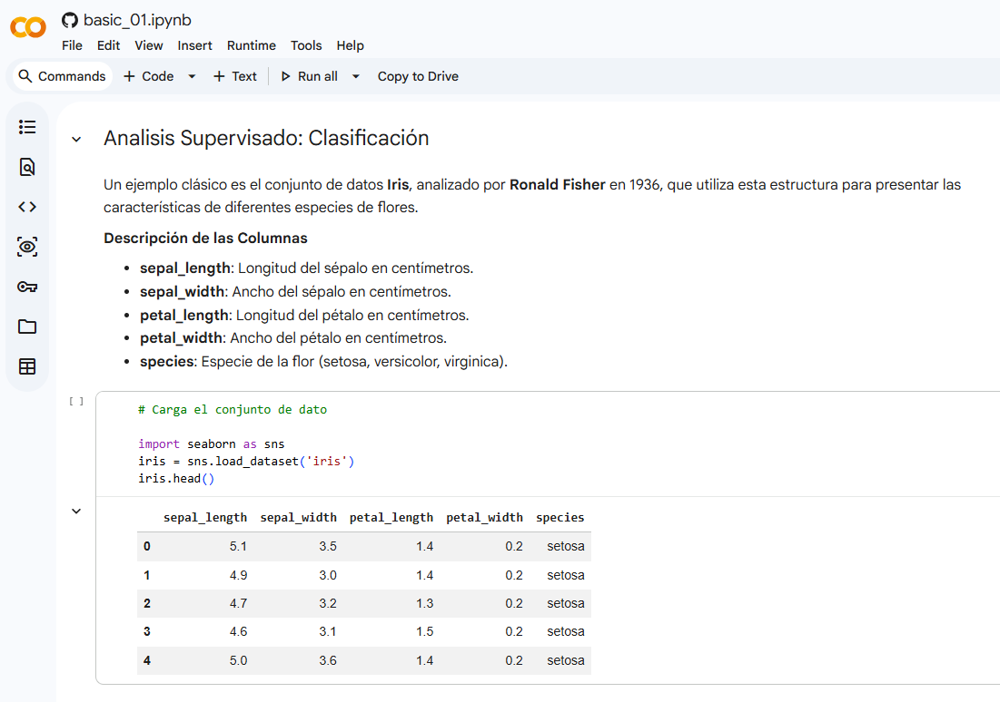
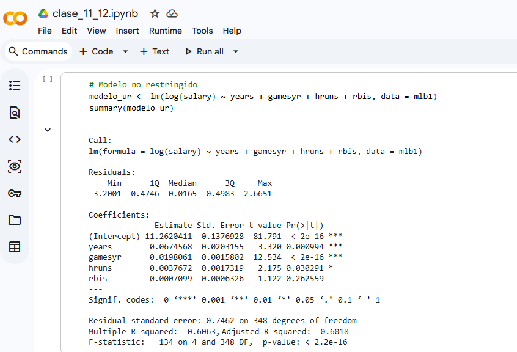
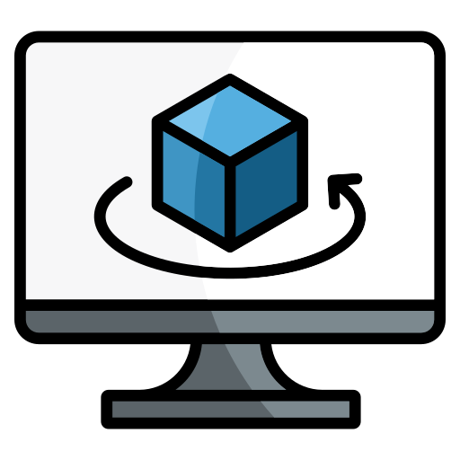
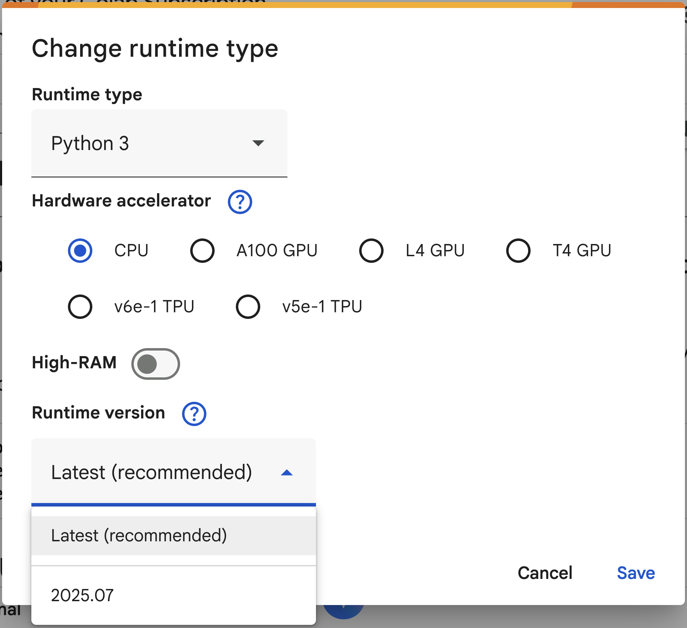
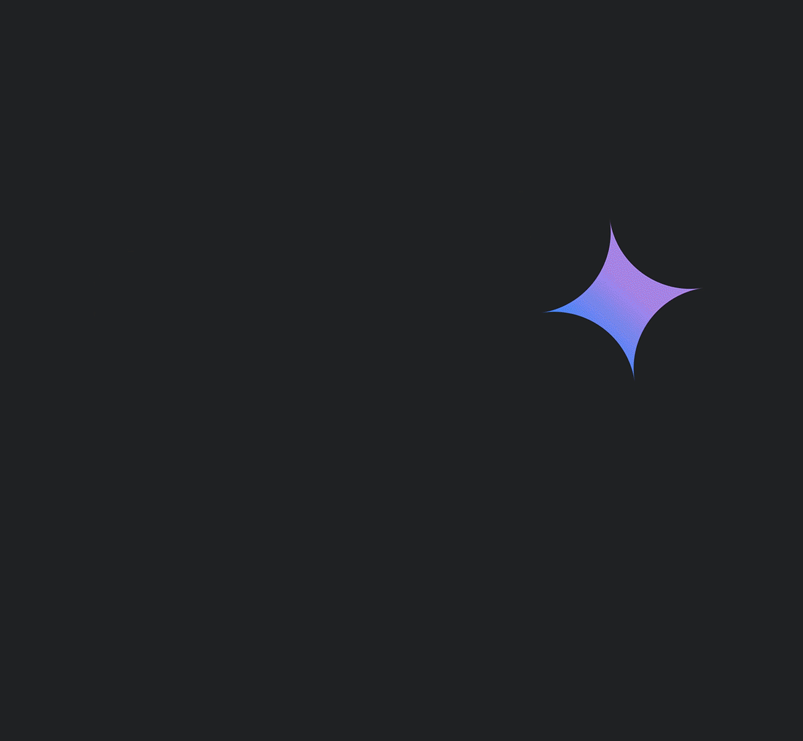
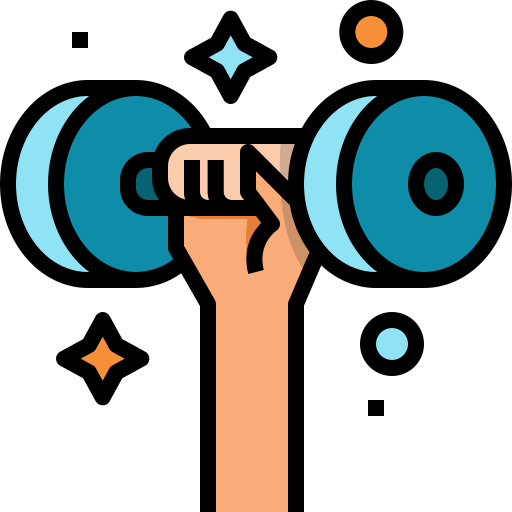

Google Colab
Ejecuta código Python y R desde el navegador, sin instalar nada
Dirección de Transformación Digital · UTFSM
mayo 2026
Google Colab
Ejecuta código desde el navegador
Python · R · Datos · Drive · IA con Gemini
MOOC propedéutico — Aprende USM 2026
Francisco Alfaro Medina
Dirección de Transformación Digital · UTFSM
Unidad de Educación a Distancia · 2026
¿Te ha pasado esto?



Objetivos

- Conocer Colab: Qué es y para qué sirve en docencia e investigación.
- Primeros pasos: Celdas de código, Markdown y ejecución en la nube.
- Recursos y datos: RAM, CPU, librerías, kernels y cómo subir archivos.
- Integraciones: Google Drive, credenciales seguras y Gemini IA.
Google Colab
¿Qué es y para qué sirve?
¿Qué es Google Colab?

- ¿Qué es?
- Entorno de notebooks Jupyter en la nube, gratuito y sin instalación.
- ¿Para qué sirve?
- Ejecutar código Python (y R) directamente desde el navegador.
- Compartir análisis, tareas y proyectos con un enlace.
- Acceder a GPU/TPU gratuita para proyectos de datos e IA.
- Ejecutar código Python (y R) directamente desde el navegador.
🌿 Solo necesitas una cuenta de Google para empezar en colab.research.google.com.
Ejemplos


Google Colab
Lo que necesitas saber
Celdas: el corazón de Colab
✏️ Celda de texto (Markdown):
👁️ Se renderiza así:
Título visible, secciones organizadas y texto formateado — igual que en GitHub README, pero dentro del notebook.
💡 Usa celdas de texto para explicar cada paso. Un buen notebook se lee como un informe.
✏️ Celda de código Python:
👁️ ¿Qué hace?
- Importa librerías ya instaladas en Colab.
- Carga un archivo CSV.
- Genera un histograma directo en el notebook.
💡 Python es el lenguaje principal de Colab — y el más usado en ciencia de datos.
✏️ Activar R en Colab:
En el menú: Runtime → Change runtime type → R
👁️ ¿Qué hace?
- Cambia el kernel de Python a R con un clic.
- Permite usar R y sus librerías (
ggplot2,dplyr,tidyr) directamente. - Ideal si tu curso usa R como lenguaje principal.
💡 No necesitas instalar R en tu computador — Colab lo tiene listo.
Google Colab
Recursos, Librerías y Kernels
¿Qué tiene la máquina?

- CPU: ~2 núcleos Intel Xeon — suficiente para análisis de datos típicos.
- RAM: ~12 GB — para datasets medianos sin problema.
- Disco: ~100 GB temporales — se borran al cerrar la sesión.
- GPU T4 (gratis): disponible bajo demanda para modelos de ML.
⚠️ Sesiones temporales: si la sesión se desconecta, los archivos locales se pierden. Guarda siempre en Drive.
Verificar recursos disponibles
🌿 Corre estas celdas al inicio de tu sesión para saber con qué recursos cuentas.
Librerías: ya instaladas vs. extras
✅ Ya vienen instaladas:
| Librería | Para qué sirve |
|---|---|
pandas |
Datos tabulares |
numpy |
Álgebra numérica |
matplotlib |
Gráficos básicos |
scikit-learn |
Machine Learning |
tensorflow |
Deep Learning |
seaborn |
Visualización estadística |
Cambiar el Kernel (Runtime)

Menú: Runtime → Change runtime type
- CPU: para análisis de datos y scripts generales.
- GPU T4: para entrenamiento de modelos de ML/DL.
- TPU: para modelos muy grandes con TensorFlow.
- R: para cambiar completamente el lenguaje del entorno.
🌿 Cambiar el runtime reinicia la sesión — guarda tu trabajo antes de hacerlo.
Google Colab
Datos, Drive y Credenciales
Subir datos a Colab
✏️ Desde el panel lateral:
📁 Ícono de carpeta (izquierda)
→ Subir archivo
→ Selecciona tu CSV o ExcelO desde código:
👁️ ¿Cuándo usarlo?
- Archivos pequeños (< 50 MB).
- Uso puntual en una sola sesión.
⚠️ El archivo desaparece al cerrar la sesión. No es la opción más estable.
✏️ Descargar desde internet:
👁️ ¿Cuándo usarlo?
- Datos públicos en GitHub o repositorios abiertos.
- Google Sheets compartidos del curso.
💡 Es la forma más reproducible — el notebook funciona para cualquiera que lo abra.
✏️ Montar tu Drive:
👁️ ¿Por qué es lo mejor?
- Los archivos persisten aunque se reinicie la sesión.
- Organiza datos en carpetas de Drive como si fuera tu escritorio.
- Funciona igual que una carpeta local.
💡 Recomendado para proyectos que se retoman en múltiples sesiones.
❌ Nunca hagas esto:
✅ Usa Secrets de Colab:
👁️ ¿Cómo configurar Secrets?
🔑 Ícono de llave (panel izquierdo)
→ "Add new secret"
→ Nombre: MI_API_KEY
→ Valor: tu clave real
→ Activar acceso al notebook🔐 Nunca compartas un notebook con claves escritas directamente en el código.
Google Colab
IA con Gemini integrado
Gemini en Colab

- ¿Qué es Gemini en Colab?
- Asistente IA integrado directamente en el entorno de notebooks.
- ¿Qué puede hacer?
- Generar y explicar celdas de código.
- Corregir errores y sugerir mejoras.
- Responder preguntas sobre librerías y análisis sin salir de Colab.
- Generar y explicar celdas de código.
🌿 Disponible con cuenta Google — el ícono ✨ aparece en cada celda de código.
Gemini: ejemplos prácticos
✨ Le pides a Gemini:
“Crea un gráfico de barras con matplotlib que muestre las notas promedio por carrera, usando la paleta ‘tab10’.”
✅ Gemini genera:
import matplotlib.pyplot as plt
import numpy as np
carreras = ["Ing. Civil", "Informática",
"Electrónica", "Industrial"]
promedios = [5.2, 5.8, 4.9, 5.5]
fig, ax = plt.subplots(figsize=(8, 5))
colors = plt.cm.tab10(np.linspace(0, 1, len(carreras)))
ax.bar(carreras, promedios, color=colors)
ax.set_title("Promedio de notas por carrera")
ax.set_ylabel("Nota promedio")
ax.set_ylim(1, 7)
plt.tight_layout()
plt.show()✨ Tienes este error:
AttributeError: 'SeriesGroupBy' object
has no attribute 'means'“¿Por qué da este error y cómo lo corrijo?”
✨ Le pides a Gemini:
“Tengo un DataFrame con columnas
nota,carrerayaño_ingreso. Sugiere un análisis exploratorio básico.”
✅ Gemini propone:
# Estadísticas descriptivas
print(df.describe())
print(df["carrera"].value_counts())
# Distribución de notas
df["nota"].hist(bins=15, figsize=(8, 4))
# Notas por carrera
df.boxplot(column="nota", by="carrera",
figsize=(10, 5))
# Evolución por año de ingreso
df.groupby("año_ingreso")["nota"].mean()\
.plot(marker="o", title="Promedio por año")Google Colab
Manos a la Obra
Actividad: Tu Primer Notebook

- Abre colab.research.google.com y crea un nuevo notebook.
- Agrega una celda de texto con título, descripción y objetivos en Markdown.
- Carga un dataset desde URL (puedes usar datos de seaborn-data).
- Explora los datos:
.head(),.describe(),.info(). - Crea al menos un gráfico con
matplotliboseaborn. - (Extra) Usa Gemini para generar o mejorar alguna celda de código.
⏱️ Tiempo de la actividad: 15–20 minutos.
Google Colab
Conclusiones
Conclusiones
✅ Google Colab permite ejecutar código Python y R sin instalar nada.
✅ Los notebooks combinan código, texto y visualizaciones en un solo lugar.
✅ Google Drive es la forma más estable de persistir datos entre sesiones.
✅ Las credenciales deben guardarse en Secrets, nunca escritas en el código.
✅ Gemini integrado acelera el aprendizaje y la escritura de código.
🎉 ¡Gracias por Participar!

🔗 Nuestro Sitio Web: educacionadistancia.usm.cl/